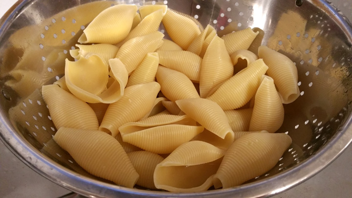

INTRODUCTIE
Dit is een lekker en gezond gerecht uit Italie. Het is makkelijk te maken en de ingerienten zijn goed verkrijgbaar.
- De voorberijdingstijd van dit recept is ongeveer 20 minuten.
- Dit gerecht is voor 4 personen geschikt.
INGREDIENTEN
- 500g macaroni schelpen
- 750g diepvries spinazie
- 2 bakjes boursin
- 2 bakjes spek
- 1 rode ui
BERIJDING
Saus
- Snijd de ui in kleine stukjes.
- Verwarm wat olie in een wokpan en bak de uitjes glanzend.
- Voeg de 2 bakjes spek toe en bak deze goudbruin.
- Doe nu de spinazie erbij.
- Als de spinazie vloeibaar is kan de boursin erbij en goed mengen.
- Als de spinazie tegen het kookpunt zit is de saus klaar. (Laat de spinazie niet koken)
Macaroni
- Vul een pan met water en kook deze.
- Wanneer het water kookt voeg je de macaroni toe.
- Doe ook een beetje olie en zout erbij.
- Na ongeveer 7 minuten koken is de macaroni klaar, maar vergeet natuurlijk niet te proeven!
Koop hier je ingredienten: (niet gesponsord)
Albert Heijn